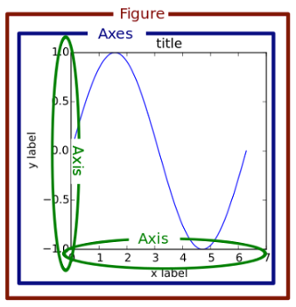
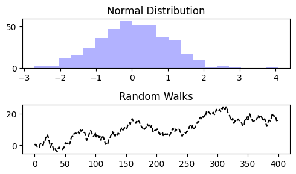
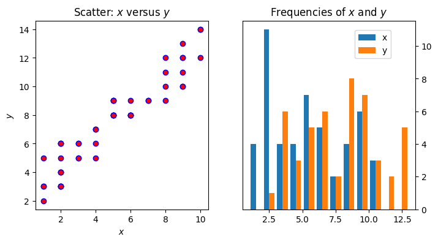
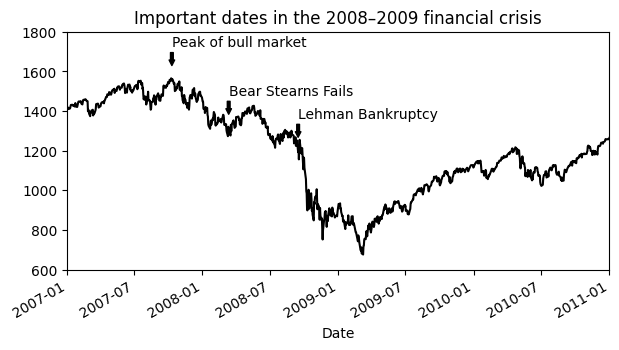
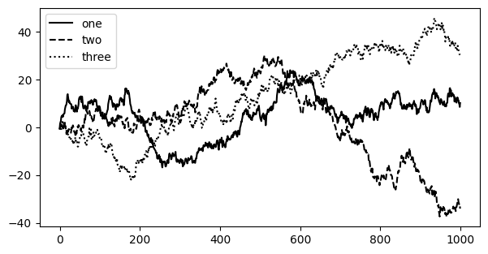

import pandas as pd
import numpy as np
import matplotlib.pyplot as plt
from datetime import datetime10 Subplots and Pivoting
(Lecture 9)
In this lecture we will continue our journey of pandas after reviewing a few more details of matplotlib
Grid of subplots
A Figure object is the outermost container for a matplotlib graphic, which can contain multiple Axes objects. One source of confusion is the name: an Axes actually translates into what we think of as an individual plot or graph (rather than the plural of “axis,” as we might expect).
You can think of the Figure object as a box-like container holding one or more Axes (actual plots). Below the Axes in the hierarchy are smaller objects such as tick marks, individual lines, legends, and text boxes. Almost every “element” of a chart is its own manipulable Python object, all the way down to the ticks and labels:

Via add_subplot()
#create a grid of two rows and one column
fig = plt.figure(figsize=(5, 3))
ax1 = fig.add_subplot(2, 1, 1)
ax2 = fig.add_subplot(2, 1, 2)
RanNums = np.random.standard_normal(400)
ax1.hist(RanNums, bins=20, color="blue", alpha=0.3);
ax1.set_title("Normal Distribution");
RanWalk = RanNums.cumsum()
ax2.plot(RanWalk, color="black", linestyle="dashed");
ax2.set_title("Random Walks");
fig.tight_layout()
Via subplots()
To make creating a grid of subplots more convenient, matplotlib includes a plt.subplots method that creates a new figure and returns a NumPy array containing the created subplot objects:
Math Notations in Notebook
If you wanted to show a sum using fancy math notations you would deploy Latex
\(\alpha = \sum_{i=1}^N{\sqrt{x_i}}\)
x = np.random.randint(low=1, high=11, size=50)
y = x + np.random.randint(1, 5, size=x.size)
data = np.column_stack((x, y))
fig, (ax1, ax2) = plt.subplots(nrows=1, ncols=2,
figsize=(8, 4))
ax1.scatter(x=x, y=y, marker='o', c='r', edgecolor='b')
ax1.set_title('Scatter: $x$ versus $y$')
ax1.set_xlabel('$x$')
ax1.set_ylabel('$y$')
ax2.hist(data, bins=np.arange(data.min(), data.max()),
label=('x', 'y'))
ax2.legend(loc=(0.65, 0.8))
ax2.set_title('Frequencies of $x$ and $y$')
ax2.yaxis.tick_right()
| Argument | Description |
|---|---|
nrows
|
Number of rows of subplots |
ncols
|
Number of columns of subplots |
sharex
|
All subplots should use the same x-axis ticks (adjusting the xlim will affect all subplots)
|
sharey
|
All subplots should use the same y-axis ticks (adjusting the ylim will affect all subplots)
|
subplot_kw
|
Dictionary of keywords passed to add_subplot call used to create each subplot
|
**fig_kw
|
Additional keywords to subplots are used when creating the figure, such as plt.subplots(2, 2, figsize=(8, 6))
|
Annotations
from datetime import datetime
url = "https://raw.githubusercontent.com/wesm/pydata-book/3rd-edition/examples/spx.csv"
stock_data = pd.read_csv(url, index_col=0, parse_dates=True)
spx = stock_data["SPX"]stock_data.head()| SPX | |
|---|---|
| Date | |
| 1990-02-01 | 328.79 |
| 1990-02-02 | 330.92 |
| 1990-02-05 | 331.85 |
| 1990-02-06 | 329.66 |
| 1990-02-07 | 333.75 |
spx[0]
spx["2007-10-11"]
spx.asof(datetime(2007, 10, 11))1554.41crisis_data = [
(datetime(2007, 10, 11), "Peak of bull market"),
(datetime(2008, 3, 12), "Bear Stearns Fails"),
(datetime(2008, 9, 15), "Lehman Bankruptcy")
]
#crisis_data[0][0]
spx.asof(crisis_data[0][0])1554.41fig, ax = plt.subplots(figsize=(7, 3.5))
spx.plot(ax=ax, color="black");
for date, label in crisis_data:
ax.annotate(label, xy=(date, spx.asof(date) + 75),
xytext=(date, spx.asof(date) + 225),
arrowprops=dict(facecolor="black", headwidth=4, width=2,
headlength=4),
horizontalalignment="left", verticalalignment="top")
# Zoom in on 2007-2010
ax.set_xlim(["1/1/2007", "1/1/2011"])
ax.set_ylim([600, 1800])
ax.set_title("Important dates in the 2008–2009 financial crisis");
Legends
fig, ax = plt.subplots(figsize=(7, 3.5))
ax.plot(np.random.randn(1000).cumsum(), color="black", label="one");
ax.plot(np.random.randn(1000).cumsum(), color="black", linestyle="dashed",label="two");
ax.plot(np.random.randn(1000).cumsum(), color="black", linestyle="dotted",label="three");
#I would expect a legend to be a lot of work
# I would have to specify which lines has which legend
ax.legend();
Pandas
Assign
We have already created new columns on the fly by the [] method. There is also a built-in method assign()
df = pd.DataFrame({'temp_c': [17.0, 25.0]},index=['Portland', 'Berkeley'])
df| temp_c | |
|---|---|
| Portland | 17.0 |
| Berkeley | 25.0 |
create a new column which measures temperature in Fahrenheit \(9/5 \cdot C + 32\)
#method1
df["temp_f"] = 9/5 * df["temp_c"] + 32
df| temp_c | temp_f | |
|---|---|---|
| Portland | 17.0 | 62.6 |
| Berkeley | 25.0 | 77.0 |
df.assign(temp_f=df['temp_c'] * 9 / 5 + 32)| temp_c | temp_f | |
|---|---|---|
| Portland | 17.0 | 62.6 |
| Berkeley | 25.0 | 77.0 |
df.assign(temp_f = df['temp_c'] * 9 / 5 + 32,
temp_k = df['temp_c'] + 273.15)| temp_c | temp_f | temp_k | |
|---|---|---|---|
| Portland | 17.0 | 62.6 | 290.15 |
| Berkeley | 25.0 | 77.0 | 298.15 |
#What does lambda mean ?
def ConvertCtoF(x):
return x['temp_c'] * 9 / 5 + 32
#ConvertCtoF(df)
df.assign(temp_f = ConvertCtoF(df))
#this is a lot of overhead to efine a function that does basically a one-liner
lambda x: x['temp_c'] * 9 / 5 + 32| temp_c | temp_f | |
|---|---|---|
| Portland | 17.0 | 62.6 |
| Berkeley | 25.0 | 77.0 |
You can create multiple columns within the same assign where one of the columns depends on another one defined within the same assign:
df.assign(temp_f=lambda x: x['temp_c'] * 9 / 5 + 32,
temp_k=lambda x: (x['temp_f'] + 459.67) * 5 / 9)| temp_c | temp_f | temp_k | |
|---|---|---|---|
| Portland | 17.0 | 62.6 | 290.15 |
| Berkeley | 25.0 | 77.0 | 298.15 |
Pivoting
In Pandas, the pivot table function takes simple data frame as input, and performs grouped operations that provides a multidimensional summary of the data.
You can also think of it as a long to wide translation.
stocks_long = pd.read_csv('https://gist.githubusercontent.com/alexdebrie/b3f40efc3dd7664df5a20f5eee85e854/raw/ee3e6feccba2464cbbc2e185fb17961c53d2a7f5/stocks.csv')
stocks_long.head()| date | symbol | open | high | low | close | volume | |
|---|---|---|---|---|---|---|---|
| 0 | 2019-03-01 | AMZN | 1655.13 | 1674.26 | 1651.00 | 1671.73 | 4974877 |
| 1 | 2019-03-04 | AMZN | 1685.00 | 1709.43 | 1674.36 | 1696.17 | 6167358 |
| 2 | 2019-03-05 | AMZN | 1702.95 | 1707.80 | 1689.01 | 1692.43 | 3681522 |
| 3 | 2019-03-06 | AMZN | 1695.97 | 1697.75 | 1668.28 | 1668.95 | 3996001 |
| 4 | 2019-03-07 | AMZN | 1667.37 | 1669.75 | 1620.51 | 1625.95 | 4957017 |
stocks_long["date"].unique()
#stocks_long["symbol"].unique()
stocks_long.shape(15, 7)The data has a number of columns and that the rows are organized by trading date and stock symbol.
That organization may be helpful for some analysis, but it can be hard to glean information about trading volume across dates and stock symbols. Let’s reshape our data to look closer at volume.
stocks_wide = stocks_long.pivot(index='symbol', columns='date', values='volume')
print(stocks_wide.shape)
stocks_wide(3, 5)| date | 2019-03-01 | 2019-03-04 | 2019-03-05 | 2019-03-06 | 2019-03-07 |
|---|---|---|---|---|---|
| symbol | |||||
| AAPL | 25886167 | 27436203 | 19737419 | 20810384 | 24796374 |
| AMZN | 4974877 | 6167358 | 3681522 | 3996001 | 4957017 |
| GOOG | 1450316 | 1446047 | 1443174 | 1099289 | 1166559 |
How to use the Pandas pivot method
To use the pivot method in Pandas, you need to specify three parameters:
Index: Which column should be used to identify and order your rows vertically
Columns: Which column should be used to create the new columns in our reshaped DataFrame. Each unique value in the column stated here will create a column in our new DataFrame.
Values: Which column(s) should be used to fill the values in the cells of our DataFrame.
In the example below, I use pivot to examine the closing trading price for each stock symbol over our trading window.
stocks_long.pivot(index='date', columns='symbol', values=['close', "volume"])| close | volume | |||||
|---|---|---|---|---|---|---|
| symbol | AAPL | AMZN | GOOG | AAPL | AMZN | GOOG |
| date | ||||||
| 2019-03-01 | 174.97 | 1671.73 | 1140.99 | 25886167.0 | 4974877.0 | 1450316.0 |
| 2019-03-04 | 175.85 | 1696.17 | 1147.80 | 27436203.0 | 6167358.0 | 1446047.0 |
| 2019-03-05 | 175.53 | 1692.43 | 1162.03 | 19737419.0 | 3681522.0 | 1443174.0 |
| 2019-03-06 | 174.52 | 1668.95 | 1157.86 | 20810384.0 | 3996001.0 | 1099289.0 |
| 2019-03-07 | 172.50 | 1625.95 | 1143.30 | 24796374.0 | 4957017.0 | 1166559.0 |
Smoking Data
3 columns: “outcome” measures whether the person is still alive after 10 years.
We want to glean the effect of smoking on survival probability.
df = pd.read_csv("https://calmcode.io/datasets/smoking.csv")
df.head()| outcome | smoker | age | |
|---|---|---|---|
| 0 | Alive | Yes | 23 |
| 1 | Alive | Yes | 18 |
| 2 | Dead | Yes | 71 |
| 3 | Alive | No | 67 |
| 4 | Alive | No | 64 |
df.shape(1314, 3)df.mean()FutureWarning: The default value of numeric_only in DataFrame.mean is deprecated. In a future version, it will default to False. In addition, specifying 'numeric_only=None' is deprecated. Select only valid columns or specify the value of numeric_only to silence this warning.
df.mean()age 46.920091
dtype: float64df = df.assign(alive = (df['outcome'] == 'Alive').astype(int),
smokes = (df['smoker'] == 'Yes').astype(int))
df.head()| outcome | smoker | age | alive | smokes | |
|---|---|---|---|---|---|
| 0 | Alive | Yes | 23 | 1 | 1 |
| 1 | Alive | Yes | 18 | 1 | 1 |
| 2 | Dead | Yes | 71 | 0 | 1 |
| 3 | Alive | No | 67 | 1 | 0 |
| 4 | Alive | No | 64 | 1 | 0 |
df.mean()
#71.9% is is the overall survival rate for all people
#How would you separately compute this for smokers and non smokers ?
#groupby is your friend !!FutureWarning: The default value of numeric_only in DataFrame.mean is deprecated. In a future version, it will default to False. In addition, specifying 'numeric_only=None' is deprecated. Select only valid columns or specify the value of numeric_only to silence this warning.
df.mean()age 46.920091
alive 0.719178
smokes 0.442922
dtype: float64Smoking is good for your health
df.groupby(['smoker']).alive.mean()smoker
No 0.685792
Yes 0.761168
Name: alive, dtype: float64df.groupby(['smoker']).agg(prob=('alive', np.mean))| prob | |
|---|---|
| smoker | |
| No | 0.685792 |
| Yes | 0.761168 |
Age adjustment
df = df.assign(age10 =np.round(df['age'] / 10) * 10)(df.groupby(['age10'])
.agg(p_alive=('alive', np.mean)
,p_smokes=('smokes', np.mean)))| p_alive | p_smokes | |
|---|---|---|
| age10 | ||
| 20.0 | 0.980645 | 0.445161 |
| 30.0 | 0.972332 | 0.438735 |
| 40.0 | 0.900000 | 0.495833 |
| 50.0 | 0.821622 | 0.632432 |
| 60.0 | 0.587302 | 0.464286 |
| 70.0 | 0.203947 | 0.236842 |
| 80.0 | 0.000000 | 0.168831 |
from datetime import datetime
datetime(2018, 6, 24)datetime.datetime(2018, 6, 24, 0, 0)Group by age and smoking status and plot the survival rates separately for the two groups
Further Reading: